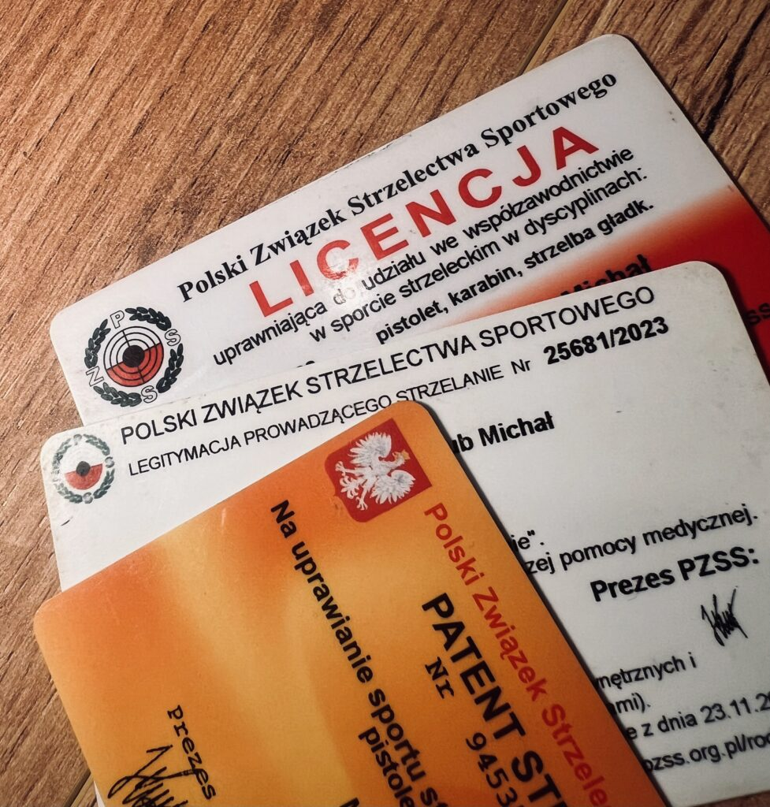
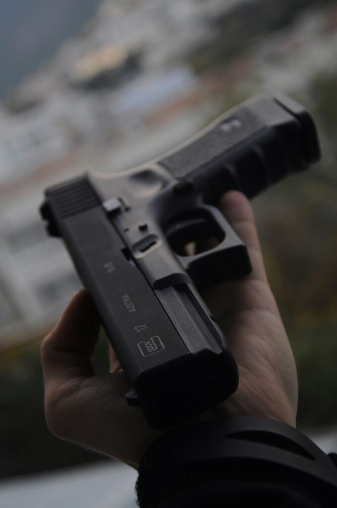

Jak zdobyć pozwolenie na broń w Polsce (2026)
2025-10-21
Zastanawiasz się nad legalnym posiadaniem broni palnej w Polsce? Dobrze trafiłeś. Ten praktyczny poradnik wyjaśni krok po kroku, jak przejść całą procedurę: od wyboru rodzaju pozwolenia, przez badania i egzaminy, aż po odbiór decyzji. Całość z aktualnymi kosztami i realiami.
Rodzaje pozwoleń na broń palną
Rozróżniamy trzy najczęściej wybierane typy:
- Sportowe: pozwala nosić broń, wymaga corocznych startów w zawodach, liczba startów jest zależna od dyscyplin (pistolet, karabin, strzelba) min 8 jeśli posiadamy wszystkie 3 dyscypliny, pozwolenie jest oparte o patent strzelecki i licencję PZSS.
- Kolekcjonerskie: pozwala posiadać większą liczbę egzemplarzy broni, nie wymaga corocznych startów w zawodach, nie daje uprawnienia do noszenia załadowanej broni poza strzelnicą. Oparte o członkostwo w stowarzyszeniu kolekcjonerskim oraz egzamin na policji.
- Myśliwskie: pozwala posiadać i używać broń do polowań, umożliwia noszenie broni tylko podczas polowania, wymaga członkostwa w PZŁ oraz zdania egzaminu łowieckiego. Nie wymaga corocznych startów w zawodach. Uzyskanie wymaga stażu w kole łowieckim i kursu łowieckiego.
Pozwolenie sportowe – krok po kroku
- Członkostwo w klubie strzeleckim
-
Patent strzelecki
- Kurs na patent, nauka zasad bezpieczeństwa, strzelania, budowy broni i regulaminów, praca z UoBiA
- Egzamin: teoretyczny (10 pytań, max. 2 błędy) , praktyczny (strzelanie z pistoletu, karabinu, strzelby).
- Opłata egzaminacyjna: 400pln.
- Licencja zawodnicza PZSS
- Badania lekarskie i psychologiczne
-
Szafa na broń
- MUSI spełniać normę S1. Koszt: od 900 zł wzwyż. Mamy najlepszą promocję na szafy w kraju! Sprawdzaj na kanale .
- Wniosek o pozwolenie do WPA (Wydział Postępowań Administracyjnych Policji)
-
Odbiór decyzji i można jechać na zakupy
- Przed zakupem trzeba jeszcze zamówić zaświadczenia do nabycia broni palnej (promesy): ok. 17 zł za sztukę.

Pozwolenie kolekcjonerskie – krok po kroku
- Wpis do stowarzyszenia/klubu kolekcjonerskiego: składka od 100 do 600 zł rocznie.
- Badania lekarskie i psychologiczne: 400–900 zł.
- Egzamin na policji – to jeden z najtrudniejszych elementów: Część teoretyczna (test 20 pytań, możliwe 2 blędy) u nas przećwiczysz ją online. Część praktyczna (obsługa, zasady bezpieczeństwa, rozkładanie broni, strzelanie)
- Szafa na broń S1: od 900 zł. Przypominam o naszej promocji o której pisałem wyżej.
- Wniosek do WPA: oświadczenia, opłata skarbowa (242 zł), motywacja kolekcjonerska, dowód członkostwa, zaświadczenie o szafie.
- Czas oczekiwania: ok. 1–3 miesięcy.
- Decyzja i promesy (17 zł/szt.) – wyjazd do sklepu i zakupy
Pozwolenie myśliwskie – krok po kroku
- Członkostwo w Polskim Związku Łowieckim (PZŁ)/klubie myśliwskim
- Badania lekarskie i psychologiczne: 500–900 zł.
- Szafa S1: od 900 zł.
- Wniosek, opłata skarbowa (242 zł), zaświadczenia.
- Czas oczekiwania: ok. 1–4 miesięcy.
- Decyzja + promesy – zakup broni w sklepie.
Pozwolenie do ochrony osobistej / inne rodzaje
- Ochrona osobista, konwoje:
Szacunkowe koszty uzyskania pozwolenia na broń, 2025
| Pozwolenie | Składka klubowa | Kurs/egzaminy | Badania (lek./psych.) | Opłata skarbowa | Szafa S1 | Promesy | Razem (szacunkowo) |
|---|---|---|---|---|---|---|---|
| Sportowe | 150–1500 zł | 400–1000 zł | 500–900 zł | 242 zł | 900 zł+ | 17 zł/szt. | 2000–3000 zł |
| Kolekcjonerskie | 100–600 zł | – | 400–900 zł | 242 zł | 900 zł+ | 17 zł/szt. | 1500–2500 zł |
| Myśliwskie | 250–1500 zł | 500–1000 zł | 500–900 zł | 242 zł | 900 zł+ | 17 zł/szt. | 2500–3500 zł |
| Ochrona osobista | – | – | 500–900 zł | 242 zł | 900 zł+ | 17 zł/szt. | 1200–2000 zł |

FAQ – najczęstsze pytania i wątpliwości
- Ile
trwa cała procedura?
Zwykle od 3 do 9 miesięcy, w zależności od regionu, szybkości działania WPA i kompletności dokumentów. - Na
ile lat dostaje się pozwolenie?
Pozwolenia są bezterminowe, pod warunkiem przestrzegania przepisów i zachowania członkostwa/licencji tam, gdzie jest to wymagane. - Czy
dzielnicowy sprawdza szafę?
Tak, zdarzają się kontrole środowiskowe – sprawdzają zgodność szafy z normą S1, sposób przechowywania oraz broni. - Jak
wygląda egzamin patentowy sportowy?
Teoria: test pisemny (10 pytań), ustawa, budowa broni, zasady bezpieczeństwa, regulaminy. Praktyka: strzelanie z pistoletu, karabinu, strzelby – określone cele i odległości. - Jakie
są wymagania zdrowotne?
Brak poważnych schorzeń psychicznych i neurologicznych, dobry wzrok i słuch. W razie wątpliwości lekarz kieruje na dodatkowe badania lub konsultacje. - Jak
często trzeba odnawiać dokumenty?
Badania – tylko raz przy składaniu wniosku, członkostwo/licencja zawodnicza – raz w roku do opłacenia; - Czy
można kupić broń bez pozwolenia?
Tak, ale tylko czarnoprochową sprzed 1885 r.
Podsumowanie
Zdobycie pozwolenia na broń w Polsce to proces kilkuetapowy, który wymaga zarówno cierpliwości, jak i funduszy. Im rzetelniej podejdziesz do formalności (badania, dokumenty, klub, egzamin), tym szybciej broń trafi do Twojej szafy. Poza wyrobieniem papierów trzeba pamiętać, że to także kwestia odpowiedzialności i ciągłego dbania o bezpieczeństwo. Dlatego warto się szkolić, warto ćwiczyć, żeby wiedzieć jak bezpiecznie posługiwać się swoją bronią.
Masz konkretny przypadek lub pytanie? Zawsze możesz zapytać na kanale albo podpytać kolegów na strzelnicy — realia bywają różne, ale proces wygląda podobnie w całej Polsce.
Jeśli chcesz dodatkowe materiały — wzory wniosków, sprawdź dział wnioski dostępny na tej stronie, w sumie TU wrzucę tam link.
jak coś pytajcie …
KuDłacz